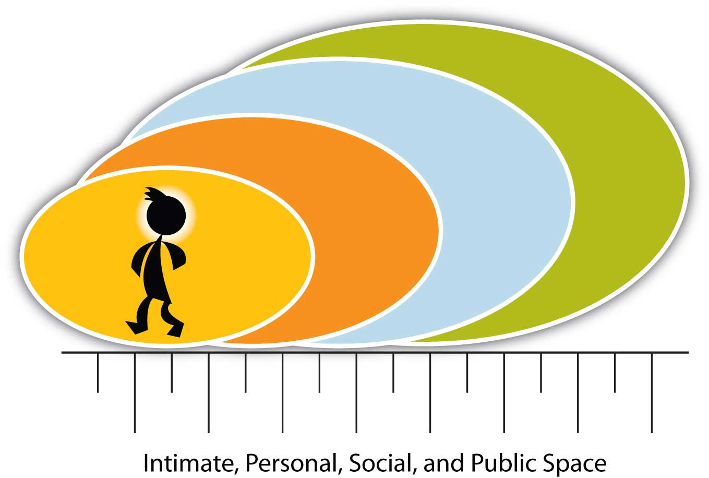
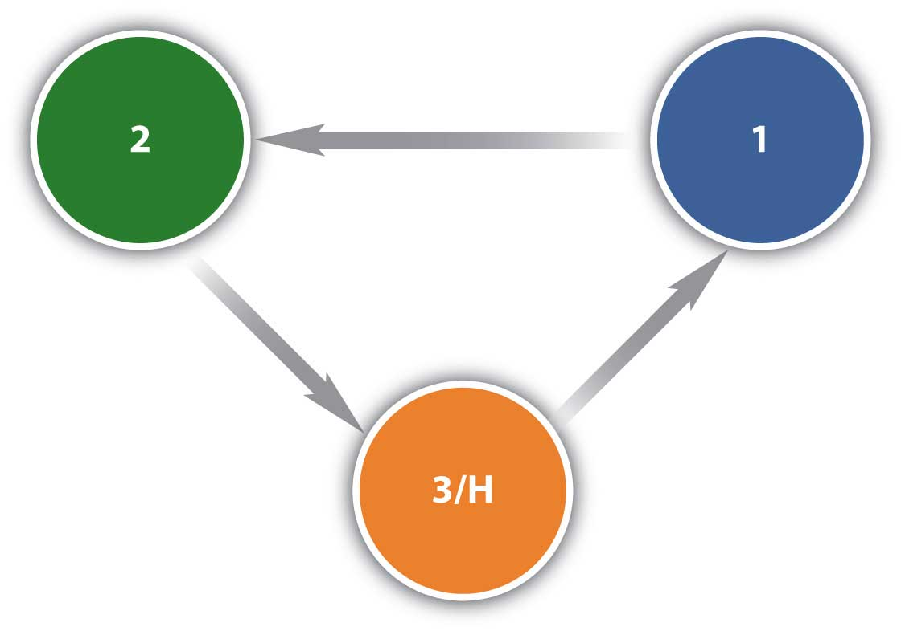

The most important thing in communication is hearing what isn’t said.
Peter F. Drucker
But behavior in the human being is sometimes a defense, a way of concealing motives and thoughts.
Abraham Maslow
Electric communication will never be a substitute for the face of someone who with their soul encourages another person to be brave and true.
Charles Dickens
In the first of the Note 11.1 "Introductory Exercises" for this chapter, we focus on how a speaker presents ideas, not the ideas themselves. Have you ever been in class and found it hard to listen to the professor, not because he or she wasn’t well informed or the topic wasn’t interesting or important to you, but because the style of presentation didn’t engage you as a listener? If your answer is yes, then you know that you want to avoid making the same mistake when you give a presentation. It’s not always what you say, but how you say it that makes a difference. We sometimes call this “body language,” or “nonverbal communication,” and it is a key aspect of effective business communication.
How do you know when your boss or instructors are pleased with your progress (or not)? You might know from the smiles on their faces, from the time and attention they give you, or perhaps in other nonverbal ways, like a raise, a bonus, or a good grade. Whether the interaction takes place face-to-face, or at a distance, you can still experience and interpret nonverbal responses.
Sometimes we place more emphasis on nonverbal aspects of communication that they warrant. Suppose you have just gotten home from your first date with Amanda and you feel it went very well. How soon should afterward should you call Amanda? There are lots of advice columns, informal rules and customs, and friends with opinions to offer you suggestions, but you know what is right for you. You also know that texting her at five o’clock the next morning might be a bit early. You may choose to wait until a coffee break around 10 a.m. to send a short text message, and realize that you might not get a response until later that afternoon.
Does the lack of an immediate response have any meaning? Does it mean Amanda is less interested in you than you are in her? While you might give it more attention than it deserves, and maybe let it weigh on your mind and distract you from other tasks, the time interval for responding may not have as much intentional meaning as you think. It might mean that Amanda has a different sense of time urgency than you do, or that she simply didn’t receive your message until later.
Timing is an important aspect of nonverbal communication, but trying to understand what a single example of timing means is challenging. Context may make a difference. For example, if you have known someone for years who has always responded promptly to your e-mails or texts, but now that person hasn’t responded in over a day, you may have reason for concern. That person’s behavior doesn’t match what you are familiar with, and this sudden, unexplained change in the established pattern may mean that you need to follow up.
Chances are you have had many experiences where words were misunderstood, or where the meaning of words was unclear. When it comes to nonverbal communication, meaning is even harder to discern. We can sometimes tell what people are communicating through their nonverbal communication, but there is no foolproof “dictionary” of how to interpret nonverbal messages. Nonverbal communicationThe process of conveying a message without the use of words. is the process of conveying a message without the use of words. It can include gestures and facial expressions, tone of voice, timing, posture and where you stand as you communicate. It can help or hinder the clear understanding of your message, but it doesn’t reveal (and can even mask) what you are really thinking. Nonverbal communication is far from simple, and its complexity makes our study and our understanding a worthy but challenging goal.
Where does a wink start and a nod end? Nonverbal communication involves the entire body, the space it occupies and dominates, the time it interacts, and not only what is not said, but how it is not said. Confused? Try to focus on just one element of nonverbal communication and it will soon get lost among all the other stimuli. Let’s consider eye contact. What does it mean by itself without context, chin position, or eyebrows to flag interest or signal a threat? Nonverbal action flows almost seamlessly from one to the next, making it a challenge to interpret one element, or even a series of elements.
We perceive time as linear, flowing along in a straight line. We did one task, we’re doing another task now, and we are planning on doing something else all the time. Sometimes we place more emphasis on the future, or the past, forgetting that we are actually living in the present moment whether we focus on “the now” or not. Nonverbal communication is always in motion, as long as we are, and is never the same twice.
Nonverbal communication is irreversible. In written communication, you can write a clarification, correction, or retraction. While it never makes the original statement go completely away, it does allow for correction. Unlike written communication, oral communication may allow “do-overs” on the spot: you can explain and restate, hoping to clarify your point. You can also dig the hole you are in just a little bit deeper. The old sayings “when you find yourself in a hole, stop digging” and “open mouth, insert foot” can sometimes apply to oral communications. We’ve all said something we would give anything to take back, but we all know we can’t. Oral communication, like written communication, allows for some correction, but it still doesn’t erase the original message or its impact. Nonverbal communication takes it one step further. You can’t separate one nonverbal action from the context of all the other verbal and nonverbal communication acts, and you can’t take it back.
In a speech, nonverbal communication is continuous in the sense that it is always occurring, and because it is so fluid, it can be hard to determine where one nonverbal message starts and another stops. Words can be easily identified and isolated, but if we try to single out a speaker’s gestures, smile, or stance without looking at how they all come together in context, we may miss the point and draw the wrong conclusion. You need to be conscious of this aspect of public speaking because, to quote another old saying, “Actions speak louder than words.” This is true in the sense that people often pay more attention to your nonverbal expressions more than your words. As a result, nonverbal communication is a powerful way to contribute to (or detract from) your success in communicating your message to the audience.
Let’s pretend you are at your computer at work. You see that an e-mail has arrived, but you are right in the middle of tallying a spreadsheet whose numbers just don’t add up. You see that the e-mail is from a coworker and you click on it. The subject line reads “pink slips.” You could interpret this to mean a suggestion for a Halloween costume, or a challenge to race for each other’s car ownership, but in the context of the workplace you may assume it means layoffs.
Your emotional response is immediate. If the author of the e-mail could see your face, they would know that your response was one of disbelief and frustration, even anger, all via your nonverbal communication. Yes, when a tree falls in the forest it makes a sound, even if no one is there to hear it. In the same way, you express yourself via nonverbal communication all the time without much conscious thought at all. You may think about how to share the news with your partner, and try to display a smile and a sense of calm when you feel like anything but smiling.
Nonverbal communication gives our thoughts and feelings away before we are even aware of what we are thinking or how we feel. People may see and hear more than you ever anticipated. Your nonverbal communication includes both intentional and unintentional messages, but since it all happens so fast, the unintentional ones can contradict what you know you are supposed to say or how you are supposed to react.
People tend to pay more attention to how you say it than what you actually say. In presenting a speech this is particularly true. We communicate nonverbally more than we engage in verbal communication, and often use nonverbal expressions to add to, or even replace, words we might otherwise say. We use a nonverbal gesture called an illustratorNonverbal expression that reinforces a verbal message. to communicate our message effectively and reinforce our point. Your coworker Andrew may ask you, “Barney’s Bar after work?” as he walks by, and you simply nod and say “yeah.” Andrew may respond with a nonverbal gesture, called an emblemNonverbal gesture that carries a specific meaning and can replace or reinforce words., by signaling with the “OK” sign as he walks away.
In addition to illustrators or emblematic nonverbal communication, we also use regulators. “RegulatorsNonverbal expression that controls, encourages, or discourages interaction. are nonverbal messages which control, maintain or discourage interaction.”McLean, S. (2003). The basics of speech communication. Boston, MA: Allyn & Bacon. For example, if someone is telling you a message that is confusing or upsetting, you may hold up your hand, a commonly recognized regulator that asks the speaker to stop talking.
Let’s say you are in a meeting presenting a speech that introduces your company’s latest product. If your audience members nod their heads in agreement on important points and maintain good eye contact, it is a good sign. Nonverbally, they are using regulators encouraging you to continue with your presentation. In contrast, if they look away, tap their feet, and begin drawing in the margins of their notebook, these are regulators suggesting that you better think of a way to regain their interest or else wrap up your presentation quickly.
“Affect displaysAn expression of emotion or mood. are nonverbal communication that express emotions or feelings.”McLean, S. (2003). The basics of speech communication (p. 77). Boston, MA: Allyn & Bacon. An affect display that might accompany holding up your hand for silence would be to frown and shake your head from side to side. When you and Andrew are at Barney’s Bar, smiling and waving at coworkers who arrive lets them know where you are seated and welcomes them.
“AdaptorsSomething that helps us feel comfortable or indicates emotions or moods. are displays of nonverbal communication that help you adapt to your environment and each context, helping you feel comfortable and secure.”McLean, S. (2003). The basics of speech communication (p. 77). Boston, MA: Allyn & Bacon. A self-adaptorAdapting something about yourself in way for which it was not designed or for no apparent purpose. involves you meeting your need for security, by playing with your hair for example, by adapting something about yourself in way for which it was not designed or for no apparent purpose. Combing your hair would be an example of a purposeful action, unlike a self-adaptive behavior. An object-adaptorUse of an object for a purpose other than its intended design. involves the use of an object in a way for which it was not designed. You may see audience members tapping their pencils, chewing on them, or playing with them, while ignoring you and your presentation. Or perhaps someone pulls out a comb and repeatedly rubs a thumbnail against the comb’s teeth. They are using the comb or the pencil in a way other than its intended design, an object-adaptor that communicates a lack of engagement or enthusiasm in your speech.
Intentional nonverbal communication can complement, repeat, replace, mask, or contradict what we say. When Andrew invited you to Barney’s, you said, “Yeah” and nodded, complementing and repeating the message. You could have simply nodded, effectively replacing the “yes” with a nonverbal response. You could also have decided to say no, but did not want to hurt Andrew’s feelings. Shaking your head “no” while pointing to your watch, communicating work and time issues, may mask your real thoughts or feelings. Masking involves the substitution of appropriate nonverbal communication for nonverbal communication you may want to display.McLean, S. (2003). The basics of speech communication (p. 77). Boston, MA: Allyn & Bacon. Finally, nonverbal messages that conflict with verbal communication can confuse the listener. Table 11.1 "Some Nonverbal Expressions" summarizes these concepts.
Table 11.1 Some Nonverbal Expressions
| Term | Definition |
|---|---|
| Adaptors | Help us feel comfortable or indicate emotions or moods |
| Affect Displays | Express emotions or feelings |
| Complementing | Reinforcing verbal communication |
| Contradicting | Contradicting verbal communication |
| Emblems | Nonverbal gestures that carry a specific meaning, and can replace or reinforce words |
| Illustrators | Reinforce a verbal message |
| Masking | Substituting more appropriate displays for less appropriate displays |
| Object-Adaptors | Using an object for a purpose other than its intended design |
| Regulators | Control, encourage or discourage interaction |
| Repeating | Repeating verbal communication |
| Replacing | Replacing verbal communication |
| Self-Adaptors | Adapting something about yourself in a way for which it was not designed or for no apparent purpose |
Consider the many contexts in which interaction occurs during your day. In the morning, at work, after work, at home, with friends, with family, and our list could go on for quite awhile. Now consider the differences in nonverbal communication across these many contexts. When you are at work, do you jump up and down and say whatever you want? Why or why not? You may not engage in that behavior because of expectations at work, but the fact remains that from the moment you wake until you sleep, you are surrounded by nonverbal communication.
If you had been born in a different country, to different parents, and perhaps as a member of the opposite sex, your whole world would be quite different. Yet nonverbal communication would remain a universal constant. It may not look the same, or get used in the same way, but it will still be nonverbal communication in its many functions and displays.
Nonverbal communication can be confusing. We need contextual clues to help us understand, or begin to understand, what a movement, gesture, or lack of display means. Then we have to figure it all out based on our prior knowledge (or lack thereof) of the person and hope to get it right. Talk about a challenge. Nonverbal communication is everywhere, and we all use it, but that doesn’t make it simple or independent of when, where, why, or how we communicate.
Suppose you are working as a salesclerk in a retail store, and a customer communicated frustration to you. Would the nonverbal aspects of your response be intentional or unintentional? Your job is to be pleasant and courteous at all times, yet your wrinkled eyebrows or wide eyes may have been unintentional. They clearly communicate your negative feelings at that moment. Restating your wish to be helpful and displaying nonverbal gestures may communicate “no big deal,” but the stress of the moment is still “written” on your face.
Can we tell when people are intentionally or unintentionally communicating nonverbally? Ask ten people this question and compare their responses. You may be surprised. It is clearly a challenge to understand nonverbal communication in action. We often assign intentional motives to nonverbal communication when in fact their display is unintentional, and often hard to interpret.
Steven Beebe, Susan Beebe, and Mark Redmond offer us three additional principals of interpersonal nonverbal communication that serve our discussion. One is that you often react faster than you think. Your nonverbal responses communicate your initial reaction before you can process it through language or formulate an appropriate response. If your appropriate, spoken response doesn’t match your nonverbal reaction, you may give away your true feelings and attitudes.Beebe, S. [Steven], Beebe, S. [Susan], & Redmond, M. (2002). Interpersonal communication relating to others (3rd ed.). Boston, MA: Allyn & Bacon.
Albert Mehrabian asserts that we rarely communicate emotional messages through the spoken word. According to Mehrabian, 93 percent of the time we communicate our emotions nonverbally, with at least 55 percent associated with facial gestures. Vocal cues, body position and movement, and normative space between speaker and receiver can also be clues to feelings and attitudes.Mehrabian, A. (1972). Nonverbal communication. Chicago, IL: Aldine Atherton.
Is your first emotional response always an accurate and true representation of your feelings and attitudes, or does your emotional response change across time? We are all changing all the time, and sometimes a moment of frustration or a flash of anger can signal to the receiver a feeling or emotion that existed for a moment, but has since passed. Their response to your communication will be based on that perception, even though you might already be over the issue. This is where the spoken word serves us well. You may need to articulate clearly that you were frustrated, but not anymore. The words spoken out loud can serve to clarify and invite additional discussion.
Building on the example of responding to a situation with facial gestures associated with frustration before you even have time to think of an appropriate verbal response, let’s ask the question: what would you believe, someone’s actions or their words? According to William Seiler and Melissa Beall, most people tend to believe the nonverbal message over the verbal message. People will often answer that “actions speak louder than words” and place a disproportionate emphasis on the nonverbal response.Seiler, W., & Beall, M. (2000). Communication: Making connections (4th ed.). Boston, MA: Allyn & Bacon. Humans aren’t logical all the time, and they do experience feelings and attitudes that change. Still, we place more confidence in nonverbal communication, particularly when it comes to lying behaviors. According to Miron Zuckerman, Bella DePaulo, and Robert Rosenthal, there are several behaviors people often display when they are being deceptive:Zuckerman, M., DePaulo, B., & Rosenthal, R. (1981). Verbal and nonverbal communication of deception. Advances in Experimental Social Psychology, 14, 1–59.
If you notice one of more of the behaviors, you may want to take a closer look. Over time we learn people’s patterns of speech and behavior, and form a set of expectations. Variation from their established patterns, combined with the clues above, can serve to alert you to the possibility that something deserves closer attention.
Our nonverbal responses have a connection to our physiological responses to stress, such as heart rate, blood pressure, and skin conductivity. Polygraph machines (popularly referred to as “lie detectors”) focus on these physiological responses and demonstrate anomalies, or variations. While movies and TV crime shows may make polygraphs look foolproof, there is significant debate about whether they measure dishonesty with any degree of accuracy.
Can you train yourself to detect lies? It is unlikely. Our purpose in studying nonverbal communication is not to uncover dishonesty in others, but rather to help you understand how to use the nonverbal aspects of communication to increase understanding.
When we first see each other, before anyone says a word, we are already sizing each other up. Within the first few seconds we have made judgments about each other based on what we wear, our physical characteristics, even our posture. Are these judgments accurate? That is hard to know without context, but we can say that nonverbal communication certainly affects first impressions, for better or worse. When a speaker and the audience first meet, nonverbal communication in terms of space, dress, and even personal characteristics can contribute to assumed expectations. The expectations might not be accurate or even fair, but it is important to recognize that they will be present. There is truth in the saying, “You never get a second chance to make a first impression.” Since beginnings are fragile times, your attention to aspects you can control, both verbal and nonverbal, will help contribute to the first step of forming a relationship with your audience. Your eye contact with audience members, use of space, and degree of formality will continue to contribute to that relationship.
As a speaker, your nonverbal communication is part of the message and can contribute to, or detract from, your overall goals. By being aware of them, and practicing with a live audience, you can learn to be more aware and in control.
Now that we have discussed the general principles that apply to nonverbal communication, let’s examine eight types of nonverbal communication to further understand this challenging aspect of communication:
When we discuss space in a nonverbal context, we mean the space between objects and people. Space is often associated with social rank and is an important part of business communication. Who gets the corner office? Why is the head of the table important and who gets to sit there?
People from diverse cultures may have different normative space expectations. If you are from a large urban area, having people stand close to you may be normal. If you are from a rural area or a culture where people expect more space, someone may be standing “too close” for comfort and not know it.
Edward T. Hall, serving in the European and South Pacific Regions in the Corps of Engineers during World War II, traveled around the globe. As he moved from one place to another, he noticed that people in different countries kept different distances from each other. In France, they stood closer to each other than they did in England. Hall wondered why that was and began to study what he called proxemicsThe study of the human use of space and distance in communication., or the study of the human use of space and distance in communication.Hall, E. T. (1963). Proxemics: The study of man’s spacial relations and boundaries. In Iago Galdston (Ed.), Man’s image in medicine and anthropology (pp. 422–445). New York, NY: International Universities Press.
In The Hidden Dimension, he indicated there are two main aspects of space: territory and personal space. Hall drew on anthropology to address the concepts of dominance and submission, and noted that the more powerful person often claims more space. This plays an important role in modern society, from who gets the corner office to how we negotiate space between vehicles. Road rage is increasingly common where overcrowding occurs, and as more vehicles occupy the same roads, tensions over space are predictable.
Territory is related to control. As a way of establishing control over your own room, maybe you painted it your favorite color, or put up posters that represent your interests or things you consider unique about yourself. Families or households often mark their space by putting up fences or walls around their houses. This sense of a right to control your space is implicit in territory. TerritoryThe space you claim as your own, are responsible for, or are willing to defend. means the space you claim as your own, are responsible for, or are willing to defend.
The second aspect Hall highlights is personal spaceThe “bubble” of space surrounding each individual., or the “bubble” of space surrounding each individual. As you walk down a flight of stairs, which side do you choose? We may choose the right side because we’ve learned that is what is expected, and people coming up the same stair choose their right. The right choice insures that personal space is not compromised. But what happens when some comes up the wrong side? They violate the understood rules of movement and often correct themselves. But what happens if they don’t change lanes as people move up and down the stairs? They may get dirty looks or even get bumped as people in the crowd handle the invasion of “their” space. There are no lane markers, and bubbles of space around each person move with them, allowing for the possibility of collision.
We recognize the basic need for personal space, but the normative expectations for space vary greatly by culture. You may perceive that in your home people sleep one to each bed, but in many cultures people sleep two or more to a bed and it is considered normal. If you were to share that bed, you might feel uncomfortable, while someone raised with group sleeping norms might feel uncomfortable sleeping alone. From where you stand in an aerobics class in relation to others, to where you place your book bag in class, your personal expectations of space are often at variance with others.
As the context of a staircase has norms for nonverbal behavior, so does the public speaking context. In North America, eye contact with the audience is expected. Big movements and gestures are not generally expected and can be distracting. The speaker occupies a space on the “stage,” even if it’s in front of the class. When you occupy that space, the audience will expect to behave in certain ways. If you talk to the screen behind you while displaying a PowerPoint presentation, the audience may perceive that you are not paying attention to them. Speakers are expected to pay attention to, and interact with, the audience, even if in the feedback is primarily nonverbal. Your movements should coordinate with the tone, rhythm, and content of your speech. Pacing back and forth, keeping your hands in your pockets, or crossing your arms may communicate nervousness, or even defensiveness, and detract from your speech.
Figure 11.2 Space: Four Main Categories of Distance
As a general rule, try to act naturally, as if you were telling a friend a story, so that your body will relax and your nonverbal gestures will come more naturally. Practice is key to your level of comfort; the more practice you get, the more comfortable and less intimidating it will seem to you.
Hall articulated four main categories of distance used in communication as shown in Figure 11.2 "Space: Four Main Categories of Distance".Hall, E. (1966). The hidden dimension. New York, NY: Doubleday.
Do you know what time it is? How aware you are of time varies by culture and normative expectations of adherence (or ignorance) of time. Some people, and the communities and cultures they represent, are very time-oriented. The Euro Railways trains in Germany are famous for departing and arriving according to the schedule. In contrast, if you take the train in Argentina, you’ll find that the schedule is more of an approximation of when the train will leave or arrive.
“Time is money” is a common saying across many cultures, and reveals a high value for time. In social contexts, it often reveals social status and power. Who are you willing to wait for? A doctor for an office visit when you are sick? A potential employer for a job interview? Your significant other or children? Sometimes we get impatient, and our impatience underscores our value for time.
When you give a presentation, does your audience have to wait for you? Time is a relevant factor of the communication process in your speech. The best way to show your audience respect is to honor the time expectation associated with your speech. Always try to stop speaking before the audience stops listening; if the audience perceives that you have “gone over time,” they will be less willing to listen. This in turn will have a negative impact on your ability to communicate your message.
Suppose you are presenting a speech that has three main points. Your audience expects you to regulate the time and attention to each point, but if you spend all your time on the first two points and rush through the third, your speech won’t be balanced and will lose rhythm. The speaker occupies a position of some power, but it is the audience that gives them that position. By displaying respect and maintaining balance, you will move through your points more effectively.
ChronemicsThe study of how we refer to and perceive time. is the study of how we refer to and perceive time. Tom Bruneau at Radford University has spent a lifetime investigating how time interacts in communication and culture.Bruneau, T. (1974). Time and nonverbal communication. Journal of Poplular Culture, 8, 658–666.,Bruneau, T. (1990). Chronemics: The study of time in human interaction. In J. DeVito & M. Hecht (Eds.), The nonverbal reader (pp. 301–311). Prospect Heights, IL: Waveland Press.,Bruneau, T., & Ishii, S. (1988). Communicative silence: East and west. World Communication, 17, 1–33. As he notes, across Western society, time is often considered the equivalent of money. The value of speed is highly prized in some societies.Schwartz, T. (1989, January/February). Acceleration syndrome: Does everyone live in the fast lane? Utne Reader, 31, 36–43. In others, there is a great respect for slowing down and taking a long-term view of time.
When you order a meal at a fast food restaurant, what are your expectations for how long you will have to wait? When you order a pizza online for delivery, when do you expect it will arrive? If you order cable service for your home, when do you expect it might be delivered? In the first case, you might measure the delivery of a hamburger in a matter of seconds or minutes, and perhaps thirty minutes for pizza delivery, but you may measure the time from your order to working cable in days or even weeks. You may even have to be at your home from 8 a.m. to noon, waiting for its installation. The expectations vary by context, and we often grow frustrated in a time-sensitive culture when the delivery does not match our expectations.
In the same way, how long should it take to respond to a customer’s request for assistance or information? If they call on the phone, how long should they be on hold? How soon should they expect a response to an e-mail? As a skilled business communicator, you will know to anticipate normative expectations and do your best to meet those expectations more quickly than anticipated. Your prompt reply or offer of help in response to a request, even if you cannot solve the issue on the spot, is often regarded positively, contributing to the formation of positive communication interactions.
Across cultures the value of time may vary. Some Mexican American friends may invite you to a barbecue at 8 p.m., but when you arrive you are the first guest, because it is understood that the gathering actually doesn’t start until after 9 p.m. Similarly in France, an 8 p.m. party invitation would be understood to indicate you should arrive around 8:30, but in Sweden 8 p.m. means 8 p.m., and latecomers may not be welcome. Some Native Americans, particularly elders, speak in well-measured phrases and take long pauses between phrases. They do not hurry their speech or compete for their turn, knowing no one will interrupt them.McLean, S. (1998). Turn-taking and the extended pause: A study of interpersonal communication styles across generations on the Warm Springs Indian reservation. In K. S. Sitaram & M. Prosser (Eds.), Civic discourse: Multiculturalsim, cultural diversity, and global communication (pp. 213–227). Stamford, CT: Ablex Publishing Company. Some Orthodox Jews observe religious days when they do not work, cook, drive, or use electricity. People around the world have different ways of expressing value for time.
You didn’t choose your birth, your eye color, the natural color of your hair, or your height, but people spend millions every year trying to change their physical characteristics. You can get colored contacts; dye your hair; and if you are shorter than you’d like to be, buy shoes to raise your stature a couple of inches. You won’t be able to change your birth, and no matter how much you stoop to appear shorter, you won’t change your height until time and age gradually makes itself apparent. If you are tall, you might find the correct shoe size, pant length, or even the length of mattress a challenge, but there are rewards. Have you ever heard that taller people get paid more?Burnham, T., & Phelan, J. (2000). Mean genes: From sex to money to food: Taming our primal instincts. Cambridge, MA: Perseus. There is some truth to that idea. There is also some truth to the notion that people prefer symmetrical faces (where both sides are equal) over asymmetrical faces (with unequal sides; like a crooked nose or having one eye or ear slightly higher than the other).Burnham, T., & Phelan, J. (2000). Mean genes: From sex to money to food: Taming our primal instincts. Cambridge, MA: Perseus.
We often make judgments about a person’s personality or behavior based on physical characteristics, and researchers are quick to note that those judgments are often inaccurate.Wells, W., & Siegel, B. (1961). Stereotypes somatypes. Psychological Reports, 8, 77–78.,Cash, T., & Kilcullen, R. (1985). The eye of the beholder: Susceptibility to sexism and beautyism in the evaluation of managerial applicants. Journal of Applied Social Psychology, 15, 591–605. Regardless of your eye or hair color, or even how tall you are, being comfortable with yourself is an important part of your presentation. Act naturally and consider aspects of your presentation you can control in order to maximize a positive image for the audience.
The study of body movements, called kinesicsThe study of body movements., is key to understanding nonverbal communication. Since your actions will significantly contribute to the effectiveness of your business interactions, let’s examine four distinct ways body movements that complement, repeat, regulate, or replace your verbal messages.
Body movements can complement the verbal message by reinforcing the main idea. For example, you may be providing an orientation presentation to a customer about a software program. As you say, “Click on this tab,” you may also initiate that action. Your verbal and nonverbal messages reinforce each other. You can also reinforce the message by repeating it. If you first say, “Click on the tab,” and then motion with your hand to the right, indicating that the customer should move the cursor arrow with the mouse to the tab, your repetition can help the listener understand the message.
In addition to repeating your message, body movements can also regulate conversations. Nodding your head to indicate that you are listening may encourage the customer to continue asking questions. Holding your hand up, palm out, may signal them to stop and provide a pause where you can start to answer.
Body movements also substitute or replace verbal messages. Ekman and Friesen found that facial features communicate to others our feelings, but our body movements often reveal how intensely we experience those feelings.Ekman, P., & Friesen, W. (1967). Head and body cures in the judgment of emotions: A reformulation. Perceptual and Motor Skills, 24, 711–724. For example, if the customer makes a face of frustration while trying to use the software program, they may need assistance. If they push away from the computer and separate themselves physically from interacting with it, they may be extremely frustrated. Learning to gauge feelings and their intensity as expressed by customers takes time and patience, and your attention to them will improve your ability to facilitate positive interactions.
Touch in communication interaction is called hapticsTouch in communication interaction., and William Seiler and Meliss BeallSeiler, W., & Beall, M. (2000). Communication: Making connections (4th ed.). Boston, MA: Allyn & Bacon. identify five distinct types of touch, from impersonal to intimate, as listed in Table 11.2 "Types of Touch".
Table 11.2 Types of Touch
| Term | Definition |
|---|---|
| 1. Functional-Professional Touch | Medical examination, physical therapy, sports coach, music teacher |
| 2. Social-Polite Touch | Handshake |
| 3. Friendship-Warmth Touch | Hug |
| 4. Love-Intimacy Touch | Kiss between family members or romantic partners |
| 5. Sexual-Arousal Touch | Sexual caressing and intercourse |
Before giving your presentation, you may interact with people by shaking hands and making casual conversation. This interaction can help establish trust before you take the stage. While speaking in public we do not often touch people in the audience, but we do interact with visual aids, our note cards, and other objects. How we handle them can communicate our comfort level. It’s always a good idea to practice using the technology, visual aids, or note cards you will use in a speech during a practice session. Using the technology correctly by clicking the right button on the mouse or pressing the right switch on the overhead projector can contribute to your credibility.
Paralanguage is the exception to the definition of nonverbal communication. You may recall that we defined nonverbal communication as not involving words, but paralanguage exists when we are speaking, using words. ParalanguageInvolves verbal and nonverbal aspects of speech that influence meaning, including tone, intensity, pausing, and silence. involves verbal and nonverbal aspects of speech that influence meaning, including tone, intensity, pausing, and even silence.
Perhaps you’ve also heard of a pregnant pauseA silence between verbal messages that is full of meaning., a silence between verbal messages that is full of meaning. The meaning itself may be hard to understand or decipher, but it is there nonetheless. For example, your coworker Jan comes back from a sales meeting speechless and with a ghost-white complexion. You may ask if the meeting went all right. “Well, ahh…” may be the only response you get. The pause speaks volumes. Something happened, though you may not know what. It could be personal if Jan’s report was not well received, or it could be more systemic, like the news that sales figures are off by 40 percent and pink slips may not be far behind.
Silence or vocal pauses can communicate hesitation, indicate the need to gather thought, or serve as a sign of respect. Keith Basso quotes an anonymous source as stating, “It is not the case that a man who is silent says nothing.”Basso, K. A. (1970). To give up on words: Silence in western Apache culture. In D. Carbaugh (Ed.), Cultural communication and intercultural contact (pp. 301–318). Hillsdale, NJ: Laurence Erlbaum. Sometimes we learn just as much, or even more, from what a person does not say as what they do say. In addition, both Basso and Susan Philips found that traditional speech among Native Americans places a special emphasis on silence.Philips, S. (1983). The invisible culture: Communication in the classroom and community on the Warm Springs Indian Reservation. Chicago, IL: Waveland Press.
Do you cover your tattoos when you are at work? Do you know someone who does? Or perhaps you know someone who has a tattoo and does not need to cover it up on their job? Expectations vary a great deal, but body art or tattoos are still controversial in the workplace. According to the San Diego Union-Tribune,Kinsman, M. (2001, August 20). Tattoos and nose rings. San Diego Union-Tribune, p. C1.
In your line of work, a tattoo might be an important visual aid, or it might detract from your effectiveness as a business communicator. Body piercings may express individuality, but you need to consider how they will be interpreted by employers and customers.
ArtifactsNonverbal representations of communication. are forms of decorative ornamentation that are chosen to represent self-concept. They can include rings and tattoos, but may also include brand names and logos. From clothes to cars, watches, briefcases, purses, and even eyeglasses, what we choose to surround ourselves with communicates something about our sense of self. They may project gender, role or position, class or status, personality, and group membership or affiliation. Paying attention to a customer’s artifacts can give you a sense of the self they want to communicate, and may allow you to more accurately adapt your message to meet their needs.
EnvironmentInvolves the physical and psychological aspects of the communication context. involves the physical and psychological aspects of the communication context. More than the tables and chairs in an office, environment is an important part of the dynamic communication process. The perception of one’s environment influences one’s reaction to it. For example, Google is famous for its work environment, with spaces created for physical activity and even in-house food service around the clock. The expense is no doubt considerable, but Google’s actions speak volumes. The results produced in the environment, designed to facilitate creativity, interaction, and collaboration, are worth the effort.
Nonverbal communication can be categorized into eight types: space, time, physical characteristics, body movements, touch, paralanguage, artifacts, and environment.
At some point in your business career you will be called upon to give a speech. It may be to an audience of one on a sales floor, or to a large audience at a national meeting. You already know you need to make a positive first impression, but do you know how to use movement in your presentation? In this section we’ll examine several strategies for movement and their relative advantages and disadvantages.
Customers and audiences respond well to speakers who are comfortable with themselves. Comfortable doesn’t mean overconfident or cocky, and it doesn’t mean shy or timid. It means that an audience is far more likely to forgive the occasional “umm” or “ahh,” or the nonverbal equivalent of a misstep, if the speaker is comfortable with themselves and their message.
Let’s start with behaviors to avoid. Who would you rather listen to: a speaker who moves confidently across the stage or one who hides behind the podium; one who expresses herself nonverbally with purpose and meaning or one who crosses his arms or clings to the lectern?
Audiences are most likely to respond positively to open, dynamic speakers who convey the feeling of being at ease with their bodies. The setting, combined with audience expectations, will give a range of movement. If you are speaking at a formal event, or if you are being covered by a stationary camera, you may be expected to stay in one spot. If the stage allows you to explore, closing the distance between yourself and your audience may prove effective. Rather than focus on a list of behaviors and their relationship to environment and context, give emphasis to what your audience expects and what you yourself would find more engaging instead.
Novice speakers are often told to keep their arms at their sides, or to restrict their movement to only that which is absolutely necessary. If you are in formal training for a military presentation, or a forensics (speech and debate) competition, this may hold true. But in business and industry, “whatever works” rules the day. You can’t say that expressive gestures—common among many cultural groups, like arm movement while speaking—are not appropriate when they are, in fact, expected.
The questions are, again, what does your audience consider appropriate and what do you feel comfortable doing during your presentation? Since the emphasis is always on meeting the needs of the customer, whether it is an audience of one on a sales floor or a large national gathering, you may need to stretch outside your comfort zone. On that same note, don’t stretch too far and move yourself into the uncomfortable range. Finding balance is a challenge, but no one ever said giving a speech was easy.
Movement is an important aspect of your speech and requires planning, the same as the words you choose and the visual aids you design. Be natural, but do not naturally shuffle your feet, pace back and forth, or rock on your heels through your entire speech. These behaviors distract your audience from your message and can communicate nervousness, undermining your credibility.
Figure 11.3 Speaker’s Triangle
In a classical speech presentation, positions on the stage serve to guide both the speaker and the audience through transitions. The speaker’s triangle (see Figure 11.3 "Speaker’s Triangle") indicates where the speaker starts in the introduction, moves to the second position for the first point, across for the second point, then returns to the original position to make the third point and conclusion. This movement technique can be quite effective to help you remember each of your main points. It allows you to break down your speech into manageable parts, and putting tape on the floor to indicate position is a common presentation trick. Your movement will demonstrate purpose and reinforce your credibility.
Gestures involve using your arms and hands while communicating. Gestures provide a way to channel your nervous energy into a positive activity that benefits your speech and gives you something to do with your hands. For example, watch people in normal, everyday conversations. They frequently use their hands to express themselves. Do you think they think about how they use their hands? Most people do not. Their arm and hand gestures come naturally as part of their expression, often reflecting what they have learned within their community.
For professional speakers this is also true, but deliberate movement can reinforce, repeat, and even regulate an audience’s response to their verbal and nonverbal messages. You want to come across as comfortable and natural, and your use of your arms and hands contributes to your presentation. We can easily recognize that a well-chosen gesture can help make a point memorable or lead the audience to the next point.
As professional speakers lead up to a main point, they raise their hand slightly, perhaps waist high, often called an anticipation stepRaising the hand slightly to signal a nonverbal foreshadowing.. The gesture clearly shows the audience your anticipation of an upcoming point, serving as a nonverbal form of foreshadowing.
The implementation stepHolding one hand at waist level pointing outward, and raising it up with your palm forward, as in the “stop” gesture., which comes next, involves using your arms and hands above your waist. By holding one hand at waist level pointing outward, and raising it up with your palm forward, as in the “stop” gesture, you signal the point. The nonverbal gesture complements the spoken word, and as students of speech have noted across time, audiences respond to this nonverbal reinforcement. You then slowly lower your hand down past your waistline and away from your body, letting go of the gesture, and signaling your transition.
The relaxation stepLowering your hand past your waistline and away from your body., where the letting go motion complements your residual message, concludes the motion.
As you progress as a speaker from gestures and movement, you will need to turn your attention to facial gestures and expressions. Facial gesturesUsing your face to display feelings and attitudes nonverbally. involve using your face to display feelings and attitudes nonverbally. They may reinforce, or contradict, the spoken word, and their impact cannot be underestimated. As we have discussed, people often focus more on how we say something than what we actually say, and place more importance on our nonverbal gestures.Mehrabian, A. (1981). Silent messages: Implicit communication of emotions and attitudes (2nd ed.). Belmont, CA: Wadsworth. As in other body movements, your facial gestures should come naturally, but giving them due thought and consideration can keep you aware of how you are communicating the nonverbal message.
Facial gestures should reflect the tone and emotion of your verbal communication. If you are using humor in your speech, you will likely smile and wink to complement the amusement expressed in your words. Smiling will be much less appropriate if your presentation involves a serious subject such as cancer or car accidents. Consider how you want your audience to feel in response to your message, and identify the facial gestures you can use to promote those feelings. Then practice in front of a mirror so that the gestures come naturally.
The single most important facial gesture (in mainstream U.S. culture) is eye contact.Seiler, W., & Beall, M. (2000). Communication: Making connections (4th ed.). Boston, MA: Allyn & Bacon. Eye contactThe speaker’s gaze that engages the audience members. refers to the speaker’s gaze that engages the audience members. It can vary in degree and length, and in many cases, is culturally influenced. Both in the speaker’s expectations and the audience member’s notion of what is appropriate will influence normative expectations for eye contact. In some cultures, there are understood behavioral expectations for male gaze directed toward females, and vice versa. In a similar way, children may have expectations of when to look their elders in the eye, and when to gaze down. Depending on the culture, both may be nonverbal signals of listening. Understanding your audience is critical when it comes to nonverbal expectations.
When giving a presentation, avoid looking over people’s heads, staring at a point on the wall, or letting your eyes dart all over the place. The audience will find these mannerisms unnerving. They will not feel as connected, or receptive, to your message and you will reduce your effectiveness. Move your eyes gradually and naturally across the audience, both close to you and toward the back of the room. Try to look for faces that look interested and engaged in your message. Do not to focus on only one or two audience members, as audiences may respond negatively to perceived favoritism. Instead, try to give as much eye contact as possible across the audience. Keep it natural, but give it deliberate thought.
To use movement strategically in your presentation, keep it natural and consider using the speaker’s triangle, the three-step sequence, facial gestures, and eye contact.
Almost all presentations can be enhanced by the effective use of visual aids. These can include handouts, overhead transparencies, drawings on the whiteboard, PowerPoint slides, and many other types of props. Visual aids are an important nonverbal aspect of your speech that you can control. Once you have chosen a topic, you need to consider how you are going to show your audience what you are talking about.
Have you ever asked for driving directions and not understood someone’s response? Did the person say, “Turn right at Sam’s Grocery Store, the new one” or “I think you will turn at the second light, but it might be the third one”? Chances are that unless you know the town well or have a map handy, the visual cue of a grocery store or a traffic light might be insufficient to let you know where to turn. Your audience experiences the same frustration, or sense of accomplishment, when they get lost or find their way during your speech. Consider how you can express yourself visually, providing common references, illustrations, and images that lead the audience to understand your point or issue.
Visual aids accomplish several goals:
When you look at your own presentation from an audience member’s perspective, you might consider how to distinguish the main points from the rest of the information. You might also consider the relationships being presented between ideas or concepts, or how other aspects of the presentation can complement the oral message.
Your audience naturally will want to know why you are presenting the visual aid. The purpose for each visual aid should be clear, and almost speak for itself. If you can’t quickly grasp the purpose of a visual aid in a speech, you have to honestly consider whether it should be used in the first place. Visual aids can significantly develop the message of a speech, but they must be used for a specific purpose the audience can easily recognize.
Perhaps you want to highlight a trend between two related issues, such as socioeconomic status and educational attainment. A line graph might show effectively how, as socioeconomic status rises, educational attainment also rises. This use of a visual aid can provide emphasis, effectively highlighting key words, ideas, or relationships for the audience.
Visual aids can also provide necessary support for your position. Audience members may question your assertion of the relationship between socioeconomic status and educational attainment. To support your argument, you might include on the slide, “According to the U.S. Department of Education Study no. 12345,” or even use an image of the Department of Education Web page projected on a large screen. You might consider showing similar studies in graphic form, illustrating similarities across a wide range of research.
Clarity is key in the use of visual aids. One way to improve clarity is to limit the number of words on a PowerPoint slide. No more than ten words per slide, with a font large enough to be read at the back of the room or auditorium, is a good rule of thumb. Key images that have a clear relationship to the verbal message can also improve clarity. You may also choose to illustrate the same data successively in two distinct formats, perhaps a line graph followed by two pie graphs. Your central goal is to ensure your visual aid is clear.
If you have been asked to give a presentation on a new product idea that a team within your organization is considering, how might you approach the challenge? You may consider a chronological organization pattern, starting with background, current market, and a trend analysis of what is to come—fair enough, but how will you make it vivid for your audience? How to represent information visually is a significant challenge, and you have several options.
You may choose to use a chart or diagramA visual depiction of how variables relate to each other or how something works. to show a timeline of events to date, from the first meeting about the proposed product to the results from the latest focus group. This timeline may work for you, but let’s say you would like to get into the actual decision-making process that motivated your team to design the product with specific features in the first place. You may decide to use decision trees (or tree diagrams) showing the variables and products in place at the beginning of your discussions, and how each decision led to the next, bringing you to the decision-making point where you are today.
To complement this comprehensive guide and help make a transition to current content areas of questions, you may use a bar or pie graph to show the percentage of competing products in the market. If you have access to the Internet and a projector, you may use a topographical map showing a three-dimensional rendering of the local areas most likely to find your product attractive. If actual hills and valleys have nothing to do with your project, you can still represent the data you have collected in three dimensions. Then you may show a comparable graph illustrating the distribution of products and their relative degree of market penetration.
Finally, you may move to the issue of results, and present the audience with a model of your product and one from a competitor, asking which they prefer. The object may be just the visual aid you need to make your point and reinforce the residual message. When we can see, feel, touch, or be in close proximity to an object it often has a greater impact. In a world of digital images and special effects, objects presented in real time can still make a positive effect on the audience.
Additional visual aids you may choose include—but are not limited to—sound and music, video, and even yourself. If your speech is about how to use the product, your demonstration may just be the best visual aid.
You will want to give some thought to how to portray your chart, graph, or object when it’s time to use your visual aids. The chalk or white board is common way of presenting visual aids, but it can get messy. Your instructor may write key words or diagrams on the boards while discussing a textbook chapter, but can you read his or her writing? The same lesson holds true for you. If you are going to use a white board and have a series of words on it, write them out clearly before you start your presentation.
Flip charts on a pedestal can also serve to show a series of steps or break a chart down into its basic components. A poster board is another common way of organizing your visual aids before a speech, but given its often one-time use, it is losing out to the computer screen. It is, however, portable and allows you a large “blank page” with which to express your ideas.
Handouts may also serve to communicate complex or detailed information to the audience, but be careful never to break handout rule number one: never give handouts to the audience at the beginning of your speech. Where do you want the audience to look—at you or at the handout? Many novice speakers might be tempted to say the handout, but you will no doubt recognize how that diverts and divides the audience’s attention. People will listen to the words from the handout in their minds and tune you out. They will read at their own pace and have questions. They may even be impolite enough to use them as fans or paper airplanes. Handouts can be your worst enemy. If you need to use one, state at the beginning of the speech that you will be providing one at the conclusion of your presentation. This will alleviate the audience’s worry about capturing all your content by taking notes, and keep their attention focused on you while you speak.
Transparencies and slides have been replaced by computer-generated slide show programs like PowerPoint by Microsoft, which we will discuss in greater detail later in this section. These programs can be very helpful in presenting visual information, but because computers and projectors sometimes break down and fail to work as planned, you need a plan B. You may need a poster board, or to write on the whiteboard or to have a handout in reserve, but a Plan B is always a good idea when it comes to presentations that integrate technology. You may arrive at your destination and find the equipment is no longer available, is incompatible with your media storage device, or is simply not working, but the show must go on.
Video clips, such as those you might find on YouTube, can also be effective visual aids. However, as with handouts, there is one concern: You don’t want the audience to want to watch the video more than they want to tune into your presentation. How do you prevent this? Keep the clip short and make sure it reinforces the central message of your presentation. Always stop speaking before the audience stops listening, and the same holds true for the mesmerizing force of moving images on a screen. People are naturally attracted to them and will get “sucked into” your video example rather quickly. Be a good editor, introduce the clip and state what will happen out loud, point out a key aspect of it to the audience while it plays (overlap), and then make a clear transitional statement as you turn it off. Transitions are often the hardest part of any speech as the audience can get off track, and video clips are one of the most challenging visual aids you can choose because of their power to attract attention. Use that power wisely.
Get started early so that you have time to create or research visual aids that will truly support your presentation, not just provide “fluff.” Make sure you use a font or image large enough to be legible for those in the back of the room, and that you actually test your visual aids before the day of your presentation. Ask a friend to stand at the back of the room and read or interpret your visual aid. If you are using computer-generated slides, try them out in a practice setting, not just on your computer screen. The slides will look different when projected. Allow time for revision based on what you learn.
Your visual aids should meet the following criteria:
Here are three general guidelines to follow when using visual aids.McLean, S. (2003). The basics of speech communication. Boston, MA: Allyn & Bacon. Here are some dos and don’ts:
The timing of your presentation, and of your visual aids, can also have good or bad consequences. According to a popular joke, a good way to get your boss to approve just about anything is to schedule a meeting after lunch, turn the lights down, and present some boring PowerPoint slides. While the idea of a drowsy boss signing off on a harebrained project is amusing, in reality you will want to use visual aids not as a sleeping potion but as a strategy to keep your presentation lively and interesting.
Becoming proficient at using visual aids takes time and practice, and the more you practice before your speech, the more comfortable you will be with your visual aids and the role they serve in illustrating your points. Planning ahead before speaking will help, but when it comes time to actually give your speech, make sure they work for the audience as they should. Speaking to a visual aid (or reading it with your back to the audience) is not an effective strategy. You should know your material well enough that you refer to a visual aid, not rely on it.
PowerPoint and similar visual representation programs can be an effective tool to help audiences remember your message, but they can also be an annoying distraction to your speech. How you prepare your slides and use the tool will determine your effectiveness.
PowerPoint is a slideware program that you have no doubt seen used in class, presentation at work, or perhaps used yourself to support a presentation. PowerPoint and similar slideware programs provide templates for creating electronic slidesImages created from templates in a slideware program such as PowerPoint which present visual information to the audience. to present visual information to the audience, reinforcing the verbal message. You’ll be able to import, or cut and paste, words from text files, images, or video clips to create slides to represent your ideas. You can even incorporate Web links. When using any software program, it’s always a good idea to experiment with it long before you intend to use it, explore its many options and functions, and see how it can be an effective tool for you.
Intercultural Communication
(click to see video)PowerPoint slides can connect words with images.
At first, you might be overwhelmed by the possibilities, and you might be tempted to use all the bells, whistles, and sound effects, not to mention the tumbling, flying, and animated graphics. If used wisely, a dissolve or key transition can be like a well-executed scene from a major motion picture film and lead your audience to the next point. But if used indiscriminately, it can annoy the audience to the point where they cringe in anticipation of the sound effect at the start of each slide. This danger is inherent in the tool, but you are in charge of it and can make wise choices that enhance the understanding and retention of your information.
The first point to consider is what is the most important visual aid? The answer is you, the speaker. You will facilitate the discussion, give life to the information, and help the audience correlate the content to your goal or purpose. You don’t want to be in a position where the PowerPoint presentation is the main focus and you are on the side of the stage, simply helping the audience follow along. It should support you in your presentation, rather than the other way around. Just as there is a number one rule for handouts, there is also one for PowerPoints: do not use PowerPoints as a read-aloud script for your speech. The PowerPoints should amplify and illustrate your main points, not reproduce everything you are going to say.
Your pictures are the second area of emphasis you’ll want to consider. The tool will allow you to show graphs, charts and illustrate relationships that words may only approach in terms of communication, but your verbal support of the visual images will make all the difference. Dense pictures or complicated graphics will confuse more than clarify. Choose clear images that have an immediate connection to both your content and the audience, tailored to their specific needs. After images, consider only key words that can be easily read to accompany your pictures. The fewer words the better: try to keep each slide to a total word count of less than ten words. Do not use full sentences. Using key words provides support for your verbal discussion, guiding you as well as your audience. The key words can serve as signposts or signal words related to key ideas.
A natural question at this point is, “How do I communicate complex information simply?” The answer comes with several options. The visual representation on the screen is for support and illustration. Should you need to communicate more technical, complex, or in-depth information in a visual way, consider preparing a handout to distribute at the conclusion of your speech. You may also consider using a printout of your slide show with a “notes” section, but if you distribute it at the beginning of your speech, you run the risk of turning your presentation into a guided reading exercise and possibly distracting or losing members of the audience. Everyone reads at a different pace and takes notes in their own way. You don’t want to be in the position of going back and forth between slides to help people follow along.
Another point to consider is how you want to use the tool to support your speech and how your audience will interpret its presentation. Most audiences wouldn’t want to read a page of text—as you might see in this book—on the big screen. They’ll be far more likely to glance at the screen and assess the information you present in relation to your discussion. Therefore, it is key to consider one main idea, relationship, or point per slide. The use of the tool should be guided with the idea that its presentation is for the audience’s benefit, not yours. People often understand pictures and images more quickly and easily than text, and you can use this to your advantage, using the knowledge that a picture is worth a thousand words.
People love color, and understandably your audience will appreciate the visual stimulation of a colorful presentation. If you have ever seen a car painted a custom color that just didn’t attract you, or seen colors put together in ways that made you wonder what people were thinking when they did that, you will recognize that color can also distract and turn off an audience.
Color is a powerful way to present information, and the power should be used wisely. You will be selecting which color you want to use for headers or key words, and how they relate the colors in the visual images. Together, your images, key words, and the use of color in fonts, backgrounds, table, and graphs can have a significant impact on your audience. You will need to give some thought and consideration to what type of impact you want to make, how it will contribute or possibly distract, and what will work well for you to produce an effective and impressive presentation.
There are inherent relationships between colors, and while you may have covered some of this information in art classes you have taken, it is valuable to review here. According to the standard color wheel, colors are grouped into primary, secondary, and tertiary categories. Primary colors are the colors from which other colors are made through various combinations. Secondary colors represent a combination of two primary colors, while tertiary colors are made from combinations of primary and secondary colors.
Colors have relationships depending on their location on the wheel. Colors that are opposite each other are called complementary and they contrast, creating a dynamic effect. Analogous colors are located next to each other and promote harmony, continuity, and sense of unity.
Your audience comes first: when considering your choice of colors to use, legibility must be your priority. Contrast can help the audience read your key terms more easily. Also, focus on the background color and its relation to the images you plan to incorporate to insure they complement each other. Consider repetition of color, from your graphics to your text, to help unify each slide. To reduce visual noise, try not to use more than two or three additional colors. Use colors sparingly to make a better impact, and consider the use of texture and reverse color fonts (the same as a background or white) as an option.
Be aware that many people are blue-green colorblind, and that red-green colorblindness is also fairly common. With this in mind, choose colors that most audience members will be able to differentiate. If you are using a pie chart, for example, avoid putting a blue segment next to a green one. Use labeling so that even if someone is totally colorblind they will be able to tell the relative sizes of the pie segments and what they signify.
Color is also a matter of culture. Some colors may be perceived as formal or informal, or masculine or feminine. Recognize that red is usually associated with danger, while green signals “go.” Make sure the color associated with the word is reflected in your choice. If you have a key word about nature, but the color is metallic, the contrast may not contribute to the rhetorical situation and confuse the audience.
Seeking a balance between professionalism and attractiveness may seem to be a challenge, but experiment and test your drafts with friends to see what works for you. Also consider examining other examples, commonly available on the Internet, but retain the viewpoint that not everything online is effective nor should it be imitated. There are predetermined color schemes already incorporated into PowerPoint that you can rely on for your presentation.
We’ve given consideration to color in relation to fonts and the representation of key words, but we also need to consider font size and selection. PowerPoint will have default settings for headlines and text, but you will need to consider what is most appropriate for your rhetorical situation. Always think about the person sitting in the back of the room. The title size should be at least forty points, and the body text (used sparingly) should be at least thirty-two points.
In Designing Visual Language: Strategies for Professional Communicators,Kostelnick, C., & Roberts, D. (1998). Designing visual language: Strategies for professional communicators. Needham Heights, MA: Allyn & Bacon. Charles Kostelnick and David Roberts provide a valuable discussion of fonts, font styles, and what to choose to make an impact depending on your rhetorical situation. One good principle they highlight is that sans serif fonts such as Arial work better than serif fonts like Times New Roman for images projected onto a screen. The thin lines and extra aspects to serif the font may not portray themselves well on a large screen or contribute to clarity. To you this may mean that you choose Arial or a similar font to enhance clarity and ease of reading. Kostelnick and Roberts also discuss the use of grouping strategies to improve the communication of information.Kostelnick, C., & Roberts, D. (1998). Designing visual language: Strategies for professional communicators. Needham Heights, MA: Allyn & Bacon. Bullets, the use of space, similarity, and proximity all pertain to the process of perception, which differs from one person to another.
As we’ve discussed, visual aids can be a powerful tool when used effectively, but can also run the risk of dominating your presentation. As a speaker, you will need to consider your audience and how the portrayal of images, text, graphic, animated sequences, or sound files will contribute or detract from your presentation. Here is a brief list of hints to keep in mind as you prepare your presentation.
Becoming proficient at using visual aids takes time and practice. The more you practice before your speech, the more comfortable you will be with your visual aids and the role they serve in illustrating your message. Giving thought to where to place visual aids before speaking helps, but when the time comes to actually give your speech, make sure you reassess your plans and ensure that they work for the audience as they should. Speaking to a visual aid (or reading it to the audience) is not an effective strategy. Know your material well enough that you refer to your visual aids, not rely on them.
Strategically chosen visual aids will serve to illustrate, complement, and reinforce your verbal message.
Nonverbal communication is an important aspect of business communication, from the context of an interpersonal interaction to a public presentation. It is a dynamic, complex, and challenging aspect of communication. We are never done learning and adapting to our environment and context, and improving our understanding of nonverbal communication comes with the territory.
When your audience first sees you, they begin to make judgments and predictions about you and your potential, just as an employer might do when you arrive for a job interview. If you are well dressed and every crease is ironed, your audience may notice your attention to detail. Wearing jeans with holes, a torn T-shirt, and a baseball cap would send a different message. Neither style of dress is “good” or “bad, but simply appropriate or inappropriate depending on the environment and context. Your skills as an effective business communicator will be called upon when you contemplate your appearance. As a speaker, your goal is to create common ground and reduce the distance between the audience and yourself. You want your appearance to help establish and reinforce your credibility.
In order to be a successful business communicator, you will need to continually learn about nonverbal communication and its impact on your interactions. Below are three ways to examine nonverbal communication.
Market research is fundamental to success in business and industry. So, too, you will need to do a bit of field research to observe how, when, and why people communicate the way they do. If you want to be able to communicate effectively with customers, you will need to anticipate not only their needs, but also how they communicate. They are far more likely to communicate with someone whom they perceive as being like them, than with a perceived stranger. From dress to mannerisms and speech patterns, you can learn from your audience how to be a more effective business communicator.
Most communication in business and industry involves groups and teams, even if the interpersonal context is a common element. Enroll a coworker or colleague in your effort to learn more about your audience, or even yourself. They can observe your presentation and note areas you may not have noticed that could benefit from revision. Perhaps the gestures you make while speaking tend to distract rather than enhance your presentations. You can also record a video of your performance and play it for them, and yourself, to get a sense of how your nonverbal communication complements or detracts from the delivery of your message.
What is the norm for eye contact where you work? Does this change or differ based on gender, age, ethnicity, cultural background, context, environment? Observation will help you learn more about how people communicate; looking for trends across a specific type of nonverbal communication can be an effective strategy. Focus on one behavior you exhibit on your videotape, like pacing, body movements across the stage, hand gestures as you are making a point, or eye contact with the audience.
To use nonverbal communication to enhance your message, watch reactions and consider enrolling an observer to help you become aware of your nonverbal habits and how your audience receives nonverbal messages.
Visit this site for a library of University of California videotapes on nonverbal communication produced by Dane Archer of the University of California at Santa Cruz. http://nonverbal.ucsc.edu
Read “Six Ways to Improve Your Nonverbal Communications” by Vicki Ritts, St. Louis Community College at Florissant Valley and James R. Stein, Southern Illinois University, Edwardsville. http://honolulu.hawaii.edu/intranet/committees/FacDevCom/guidebk/teachtip/commun-1.htm
Read “Listen With Your Eyes: Tips for Understanding Nonverbal Communication,” an About.com article by Susan Heathfield. http://humanresources.about.com/od/interpersonalcommunicatio1/a/nonverbal_com.htm
Presentation Magazine offers a wealth of ideas, tips, and templates for designing effective visual aids. http://www.presentationmagazine.com
The National Center for Education Statistics offers an easy-to-use “Create a Graph” tutorial including bar, line, area, pie, and other types of graphs. The site is made for kids, but it’s worthwhile for adults too. http://nces.ed.gov/nceskids/graphing/classic
Read “The Seven Sins of Visual Presentations” from Presentation Magazine. http://www.presentationmagazine.com/7sinsvisual.htm
Yale emeritus professor Edward Tufte is one of the top authorities on the visual presentation of data. Learn about his books on data presentation and a one-day course he teaches. http://www.edwardtufte.com/tufte/courses
Greg Conley has produced an excellent discussion of color, contrast, and tips for the use of color on his Web site and has gracefully allowed it to be included here for your benefit. Check out his site for more in-depth information and consider taking an art course to further develop your awareness of color. http://www.watercolorpainting.com/color.htm
Visit “Presenting Effective Presentations with Visual Aids” from the U.S. Department of Labor, OSHA Office of Training and Education. http://www.osha.gov/doc/outreachtraining/htmlfiles/traintec.html
The American Psychological Association provides guidelines for making presentations accessible for persons with disabilities. http://www.apa.org/pi/disability/resources/convention/index.aspx
Read “Using Visual Aids and Props for Giving More Powerful Presentations” by Larry M. Lynch. http://ezinearticles.com/?Using-Visual-Aids-and-Props-for-Giving-More-Powerful-Presentations&id=100871
Is “how you say it” really more important than what you say? Read an article by communications expert Dana Bristol-Smith that debunks a popular myth. http://www.sideroad.com/Public_Speaking/how-you-say-not-more-important-what-you-say.html